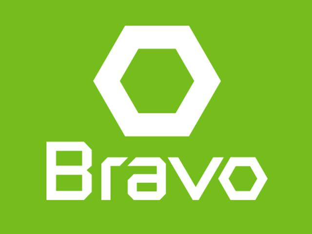
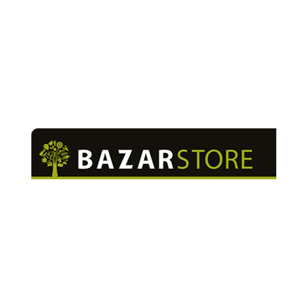

Bravo
Hədəf
Hədəfimiz nədir? Bizim ambisiyamız Azərbaycanda ərzaq məhsullarının pərakəndə satışı üzrə həmişə milli dəyərlərə bağlı olan və ölkəyə qürur verən ən etibarlı brend olmaqdır.Məqsəd
Biz hədəfimizə necə nail olmağı planlaşdırırıq? Müştərilərimizi ərzaq, qeyri-ərzaq məhsulları barədə məlumatlandırmaq və beynəlxalq standartlar səviyyəsində fəaliyyət göstərməklə yanaşı, bizim məqsədimiz yüksək keyfiyyətli innovativ məhsullar təklif etmək, həmçinin müştərilərimizi ruhlandırmaq, müsbət mənada təəccübləndirmək və həmişə orta gəlirli ailələr üçün münasib qiymətlər təqdim etməkdir.Rahat market

"RAHAT" marketlər şəbəkəsi 2009 - cu ilin may ayından yerli bazarda ticarət və pərakəndə satış fəaliyyətinə başlamışdır. Biznes fəaliyyətinə "RAHAT" ticarət markası ilə başlayan şəbəkə 2009-cu ilin may ayında özünün ilk layihəsini reallaşdırmışdır. Uğurlu investisiya siyasəti nəticəsində şirkət qısa bir zamanda Azərbaycanın ən böyük marketlər şəbəkələrindən birini yaratmağa nail olmuşdur. Hal-hazırda Bakı şəhərinin müxtəlif nöqtələrində "RAHAT" brendi altında 21 market fəaliyyət göstərir. Müştərilərinə yüksək səviyyəli xidmət göstərmək və münasib qiymətə keyfiyyətli məhsul təqdim etmək şirkətin əsas məqsədidir.
Bazarstore
Azərsun Holdinqin 2011-ci ildə fəaliyyətə başlatdığı supermarket şəbəkələrindən olan Bazarstore qısa zaman ərzində Azərbaycanda modern pərakəndə sektorunun lideri olaraq, ən çox etibar olunan və bəyənilən supermarket adını qazandı. Bazarstore qida təhlükəsizliyi sistemini quraraq, keyfiyyətli, sərfəli və bol çeşidli qida və qeyri-qida məhsul çeşidləri ilə müştərilərinin ehtiyaclarını ən yaxşı şəkildə qarşılamaqdadır. İlk öncə işçilərinin etimadını qazanan şəbəkə Pərakəndə Akademiyasında onlara müntəzəm olaraq təlimlər verərək pərakəndə sektorunda yenilikçi liderliyini davam etdirməkdədir.
Grandmart

Məqsədimiz Azərbaycan istehlakçısını daha keyfiyyətli məhsullarla təmin edə bilmək, yüksək səviyyəli xidmət göstərməkdir. "Şam-Fi” MMC 1994-cü ildə yaranmışdır. İlk zamanlar topdan satış mərkəzi kimi fəaliyyətə başlayan şirkətimiz qısa müddət ərzində inkişaf edərək yüksək səviyyəli xidməti ilə seçilən müasir ticarət şirkətinə çevrilmişdir. Belə ki, şirkətimiz 2000-ci ildən etibarən pərakəndə satış yəni supermarket sektoruna addım atmışdır. Hal-hazırda Bakı şəhərində “Grandmart” mağazalar şəbəkəsi adı altında fəaliyyət göstərən 4 müasir “Grandmart” və 1 tam yeni formatlı “Grandmart plus” mağazaları Azərbaycan istehlakçısının xidmətindədir.
Araz Supermarket

XXI əsrin birinci on illiyində ölkəmizdə, əsasən də Bakıda mövcud olan pərakəndə satış bazarında kifayət qədər boşluqlar hiss olunurdu. Buna görə də yeni bir supermarketlər şəbəkəsinin yaradılması zəruri idi. 2011-ci il mayın 7-də xarici və daxili bazarları daima araşdıran, savadlı və əzmkar insanlar bir araya gələrək “AzRetail” MMC-ni təsis etdilər. Bununla da bütün Azərbaycanı əhatə etməyi hədəf götürən “Araz" supermarketlər şəbəkəsi istifadəyə verildi. 2011-ci ildə Bakıda “Siz harada, “Araz” orada” sloqanı ilə 4 filial xidmətə başladı. Tezliklə müştərilərin məmnuniyyətini və rəğbətini qazanan marketlərimiz çoxalma siyasətini 2012-2013-ci illərdə də davam etdirdi. İntellektual və peşəkar insan resurslarına malik olan şirkət bu illər ərzində Bakı şəhəri ətrafında və Sumqayıtda daha 12 filial açaraq supermarket sayını 16-ya çatdırdı.
Neptun

Neptun Supermarketlər Şəbəkəsi 2003-cü ildə Azərbaycanda qida sektoru sahəsində fəaliyyətə başlayıb. 28 May metrostansiyası yaxınlığında fəaliyyətə başlayan birinci supermarketin uğurlu inkişafı, 2008-ci ildə növbəti-20 Yanvar ərazisində yerləşən supermarketin açılışına təkan verdi. Daha sonra Bakı şəhərinin digər yaşayış zonasında, Həzi Aslanov metrostansiyası iki istiqamətində yeni supermarketlər açılaraq supermarketlər şəbəkəsi yaradıldı. Yüksək keyfiyyətli məhsul müxtəlifliyi ilə seçilən Neptun Supermarketlər şəbəkəsi hər zaman müştəriləri üçün sağlam, müasir və ekonomik xidmət göstərməyə çalışır. Supermarketlər şəbəkəsində müxtəlif növ qida məhsulları, məişət-təsərrüfat malları, kiçik ev elektronikası kimi məhsullar əldə etmək mümkündür